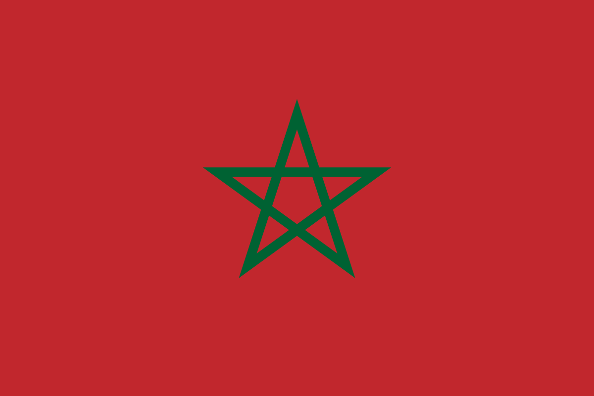

Over Marokko
Marokko is een land in Noordwest-Afrika, bekend om zijn rijke cultuur, historische steden en diverse landschappen. Het grenst aan de Atlantische Oceaan en de Middellandse Zee, en deelt landgrenzen met Algerije en de Westelijke Sahara. Marokko heeft een oppervlakte van ongeveer 710.850 vierkante kilometer en een bevolking van meer dan 37 miljoen mensen.
Geografie en Natuur
Marokko heeft een gevarieerd landschap dat zich uitstrekt van de Hoge Atlas-bergen tot de Sahara-woestijn. Langs de kust zijn prachtige stranden te vinden, terwijl het binnenland wordt gekenmerkt door vruchtbare valleien en bergachtige gebieden.
- Rifgebergte: Biedt spectaculaire uitzichten en is een populaire bestemming voor wandelaars.
- Atlasgebergte: De thuisbasis van traditionele Berberdorpen en uitdagende trekkingroutes.
- Sahara: De uitgestrekte woestijn biedt unieke ervaringen, zoals kamelentochten en overnachtingen in woestijnkampen.
Geschiedenis van Marokko
Marokko heeft een rijke geschiedenis die teruggaat tot de prehistorie. Het land was ooit een belangrijke locatie voor de Berberkoninkrijken en later het middelpunt van diverse dynastieën, zoals de Almoraviden en de Almohaden. In 1956 verkreeg Marokko zijn onafhankelijkheid van Frankrijk en Spanje.
Politiek en Bestuur
Marokko is een constitutionele monarchie. De koning, momenteel Mohammed VI, heeft een belangrijke rol in zowel het politieke als culturele leven. Het parlement bestaat uit twee kamers: de Kamer van Afgevaardigden en de Kamer van Raadgevers.
- Hoofdstad: Rabat
- Belangrijke steden: Casablanca, Marrakesh, Fez, Tanger
Cultuur en Tradities
De cultuur van Marokko is een mix van Arabische, Berberse en Europese invloeden. Het land staat bekend om zijn traditionele architectuur, kleurrijke bazaars en rijke culinaire tradities. Couscous en tajine zijn enkele van de meest iconische gerechten.
- Fez: Historisch centrum bekend om zijn leerlooierijen en oude medina.
- Marrakesh: Beroemd om de Jemaa el-Fnaa, een bruisend plein met straatartiesten en eetkraampjes.
- Chefchaouen: Een stad beroemd om zijn blauwgeschilderde gebouwen.
Onderwijs in Marokko
Het onderwijssysteem in Marokko bestaat uit basis-, middelbaar en hoger onderwijs. Universiteiten zoals de Mohammed V Universiteit in Rabat en de Cadi Ayyad Universiteit in Marrakesh trekken studenten uit het hele land.
Economie
De economie van Marokko is divers, met belangrijke sectoren zoals landbouw, toerisme en mijnbouw. Het land is een van de grootste exporteurs van fosfaat ter wereld. Ook toerisme speelt een cruciale rol, met miljoenen bezoekers per jaar.
- Belangrijke exportproducten: Fosfaat, agrarische producten, textiel
- Toeristische trekpleisters: De medina van Marrakesh, de Blauwe Stad Chefchaouen, en de ruïnes van Volubilis.
Toerisme
Marokko is een populaire bestemming voor reizigers die willen genieten van historische steden, indrukwekkende landschappen en unieke culturele ervaringen.
- Marrakesh: Een bruisende stad vol geschiedenis en cultuur.
- Ouarzazate: Bekend als de "Poort van de Woestijn" en geliefd bij filmmakers.
- Essaouira: Een charmante kuststad met een rijke geschiedenis.
Feiten en Cijfers
- Oppervlakte: 710.850 vierkante kilometer
- Bevolking: Meer dan 37 miljoen mensen
- Hoofdstad: Rabat
- Officiële talen: Arabisch en Tamazight (Berbers)